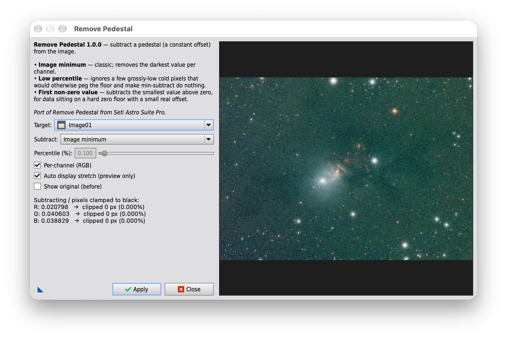

RemovePedestal
PixInsight update repository for the RemovePedestal script.
Subtracts a constant image pedestal using the image minimum, a low percentile,
or the first non-zero value. The value can be calculated per channel or globally,
with the result clipped to the range [0,1].
This page is informational. For PixInsight, use the repository URL shown below.
Repository URL for PixInsight
https://tricx.de/pi-scripts/RemovePedestal/
Installation in PixInsight
- Resources > Updates > Manage Repositories
- Add repository:
https://tricx.de/pi-scripts/RemovePedestal/ - Run Check for Updates
- Run via Script > Trickx > RemovePedestal
Screenshot
